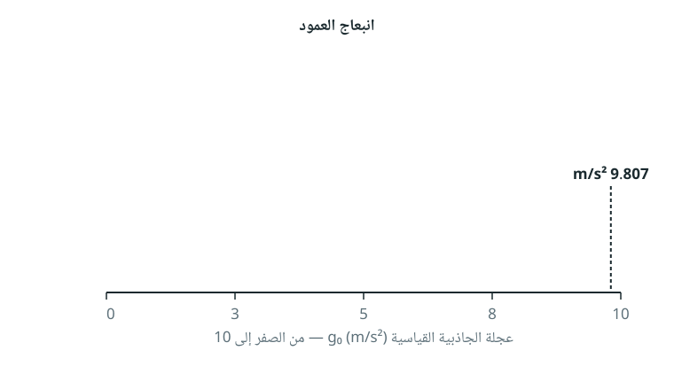

انبعاج العمود
Column buckling
الانبعاج هو فقدان مفاجئ لاستقرار عمود مضغوط عند حمل أقل بكثير من حمل الخضوع، ويحدث حين يتجاوز الحمل الحرج المحسوب بأويلر، وهو يعتمد على طول العمود وطريقة تثبيت طرفيه.
الانبعاج فقدان استقرار جانبي لعنصر رفيع مضغوط: عند حمل محوري متزايد، يبقى العمود مستقيماً حتى يبلغ الحمل قيمة حرجة، ثم ينحرف جانبياً انحرافاً كبيراً بزيادة صغيرة في الحمل. الحمل الحرج لأويلر لعمود مثالي: P_cr = π²EI/(K·L)²، حيث E معامل يونغ وI عزم القصور المساحي وL الطول وK معامل طول فعّال يعتمد على ظروف التثبيت (0.5 لمثبّت من الطرفين، 0.7 لمفصلي مع مثبّت، 1.0 لمفصلي الطرفين، 2.0 لطرف حر). مثال: عمود فولاذي E = 200 GPa، مقطع مربع 0.020 m، L = 2.00 m، مفصلي الطرفين: I = 0.020⁴/12 = 1.333×10⁻⁸ m⁴، وP_cr = π² × 200×10⁹ × 1.333×10⁻⁸/2.00² = 6 580 N.
كيف تعمل الظاهرة؟
الانبعاج ظاهرة استقرار لا ظاهرة مقاومة: العمود المستقيم في ضغط محوري يكون في توازن، لكن هذا التوازن قد يكون مستقراً أو غير مستقر. حين يُزاح العمود جانبياً إزاحة صغيرة، ينشأ عزم انحناء من الحمل المحوري يحاول زيادة الإزاحة، بينما تقاوم صلابة الانحناء EI هذا العزم. ما دامت مقاومة الصلابة أكبر، يعود العمود إلى استقامته؛ وحين يتساوى العزم المزيل مع مقاومة الصلابة، تصبح الإزاحة الصغيرة مستمرة بلا زيادة حمل — وهذا هو الحمل الحرج. فوقه، أي إزاحة صغيرة تنمو بلا حدّ. ولهذا لا يظهر الانبعاج كتحذير مسبق: لا تشوّه ملحوظ قبل الحمل الحرج، ثم انهيار مفاجئ.
العلاقة بالأرقام
P_cr = π²EI/(KL)²، وσ_cr = π²E/(KL/r)² حيث r = √(I/A) نصف قطر القصور. ومعاملات الطول الفعّال: K = 0.5 (مثبّت-مثبّت)، 0.7 (مفصلي-مثبّت)، 1.0 (مفصلي-مفصلي)، 2.0 (مثبّت-حر). مثال عددي: E = 200 GPa، I = 1.333×10⁻⁸ m⁴، L = 2.00 m، K = 1.0 → P_cr = 9.8696 × 200×10⁹ × 1.333×10⁻⁸/4.00 = 6 580 N؛ وA = 4.00×10⁻⁴ m² → σ_cr = 16.5 MPa؛ وr = √(1.333×10⁻⁸/4.00×10⁻⁴) = 5.774×10⁻³ m، وL/r = 346، فالنحافة عالية.
مفاهيم متقاربة
يُفرَّق بين الانبعاج العام والانبعاج الموضعي: الأول انحراف العمود ككل ويحسبه أويلر، والثاني التواء أو تحدّب في جدار رقيق (كما في المقاطع المجوفة والمقاطع I) ويحسب بصيغ محلية مختلفة. ويُفرَّق بين الانبعاج المرن واللدن: صيغة أويلر تفترض بقاء المادة مرنة، فإن تجاوز الإجهاد الحرج حدّ التناسب وجب استعمال صيغ لدنة كصيغة tangent-modulus. ويُفرَّق بين الانبعاج والانحناء الجانبي الالتوائي في الكمرات، وهو فقدان استقرار مختلف يخص الكمرات العالية الرقيقة. والخطأ الشائع أن يُظن أن تقوية المقطع بزيادة المساحة تكفي؛ ما يهم هو توزيع المساحة بعيداً عن المحور، أي I.
حدود التطبيق
صيغة أويلر تفترض عموداً مثالياً مستقيماً، مادة خطية مرنة، حملاً محورياً تماماً، وبلا إجهادات متبقية. في الواقع توجد انحرافات ابتدائية وإجهادات متبقية وحمل غير مركزي، فتنخفض مقاومة الانبعاج الفعلية عن القيمة المثالية؛ وتعالج المعايير ذلك بمعاملات تخفيض. والصيغة لا تنطبق على الأعمدة القصيرة (نحافة منخفضة) حيث يسبق الخضوع الانبعاج. ولا تنطبق على المواد التي لا تتبع قانون هوك خطياً، كالخشب والخرسانة والبوليمرات. وأخيراً في الأحمال الديناميكية أو المتغيرة يظهر الانبعاج عند حمل أقل من الحمل الساكن الحرج.

| الكمية | القيمة | المصدر |
|---|---|---|
| الحمل الحرج لعمود 2.00 m مفصلي الطرفين | 6 580 N | [2] |
| الإجهاد الحرج المقابل | 16.5 MPa | [2] |
المصادر
- 1 CODATA Value: standard acceleration of gravity — NIST — CODATA 2022 recommended values (2024). physics.nist.gov/cgi-bin/cuu/Value?gn · اطُّلع عليه 2026-11-21
- 2 The International System of Units (SI), 9th edition (2019) — BIPM — Bureau International des Poids et Mesures (2019). www.bipm.org/en/publications/si-brochure · اطُّلع عليه 2026-11-21
- 3 CODATA Value: Avogadro constant — NIST — CODATA 2022 recommended values (2024). physics.nist.gov/cgi-bin/cuu/Value?na · اطُّلع عليه 2026-11-21
استشهد بهذا المصطلح
الصيغتان مبنيتان من بيانات الصفحة نفسها: العنوان والتاريخ ورابط النسخة المنشورة.
انبعاج العمود — Column buckling. (2026). ديوان المعرفة — انفراد. https://infiradev.com/diwan/terms/term-buckling.html
@misc{term-buckling2026,
title = {انبعاج العمود},
titleaddon = {Column buckling},
howpublished = {{ديوان المعرفة — انفراد} — مرجع علمي عربي},
year = {2026},
url = {https://infiradev.com/diwan/terms/term-buckling.html},
urldate = {2026-11-26},
note = {مراجعة علمية: hermes (مراجعة معتمدة 2026-11-26)}
}
راجعه: hermes (مراجعة معتمدة 2026-11-26) · 2026-11-26 · آخر تحديث 2026-11-21